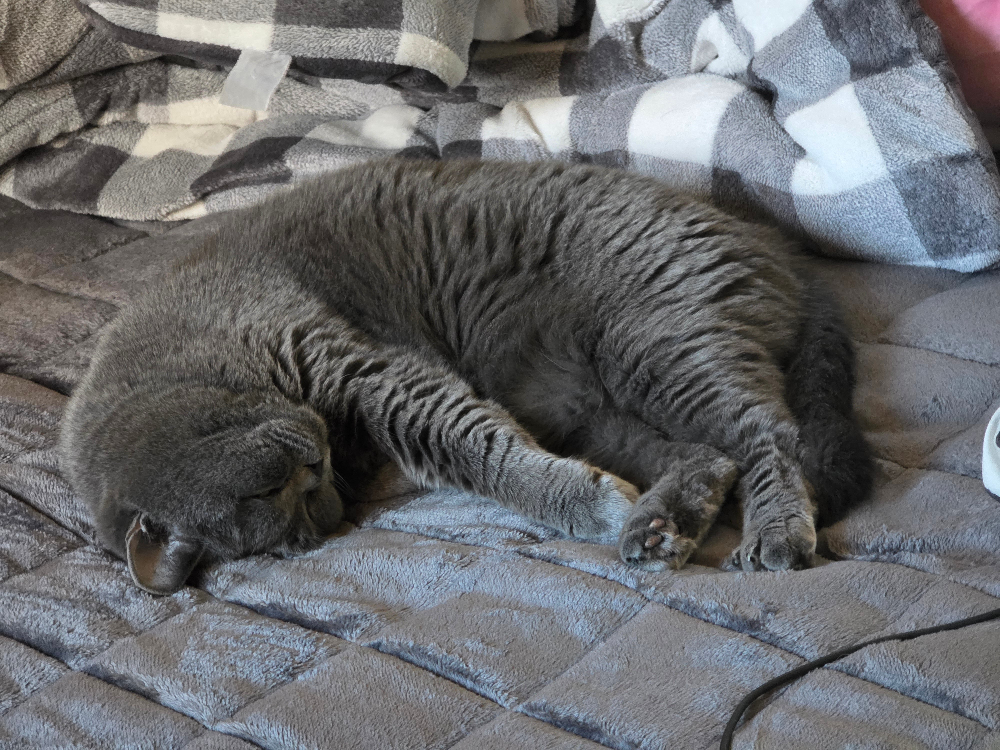
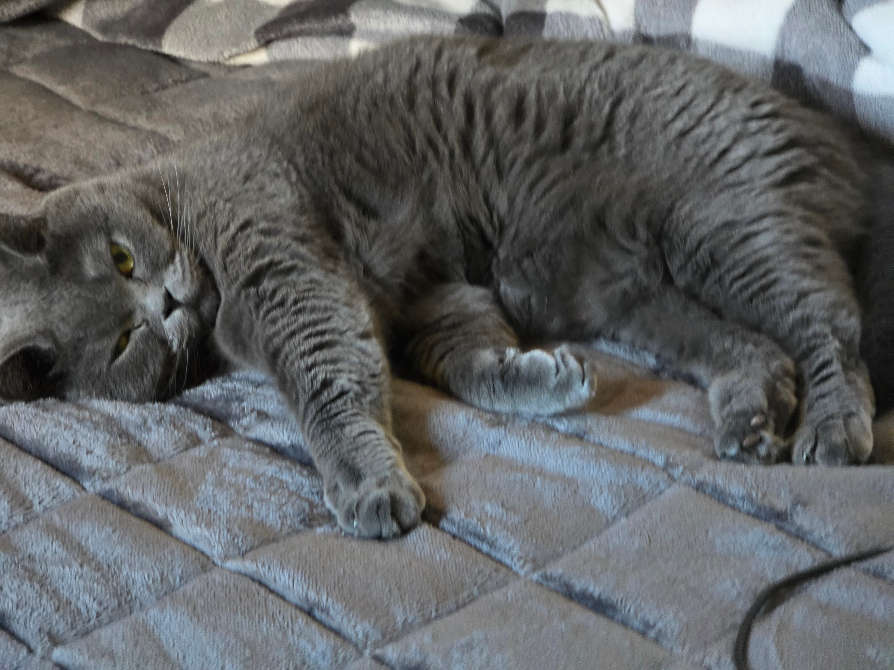
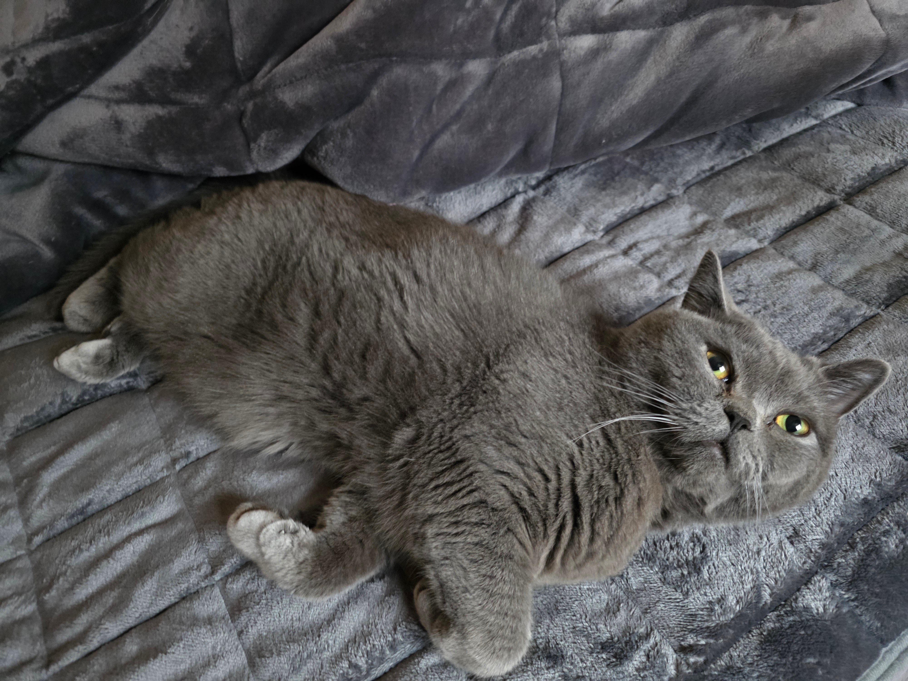
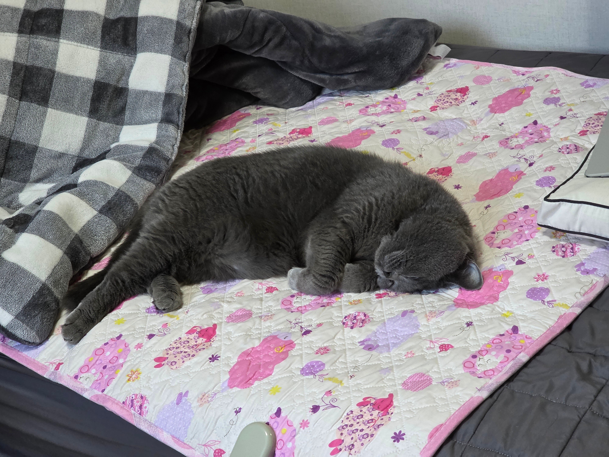
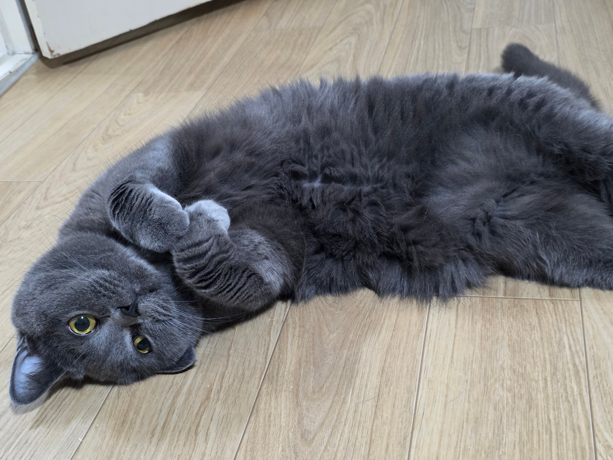
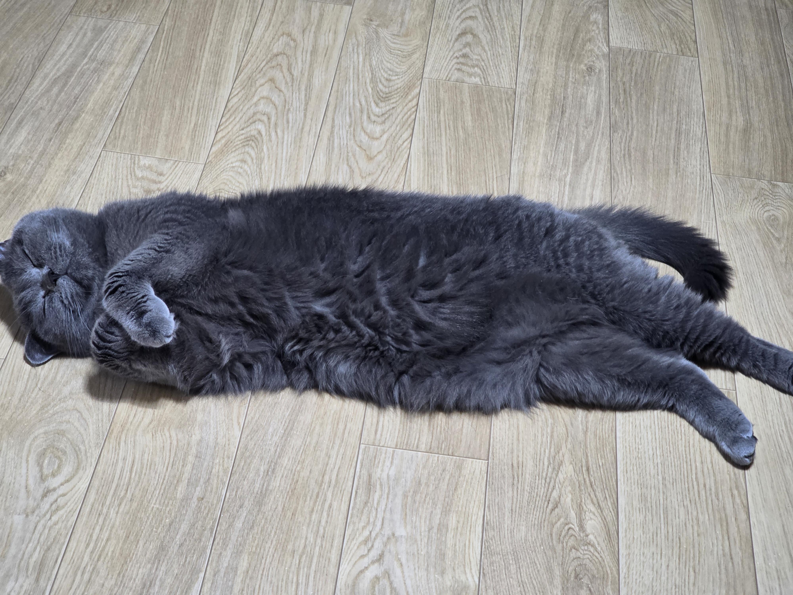
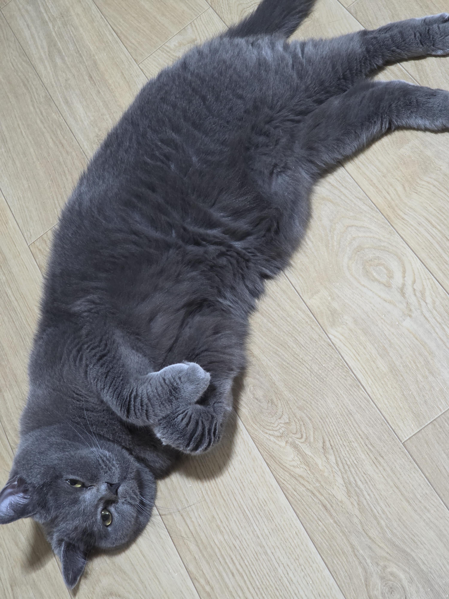
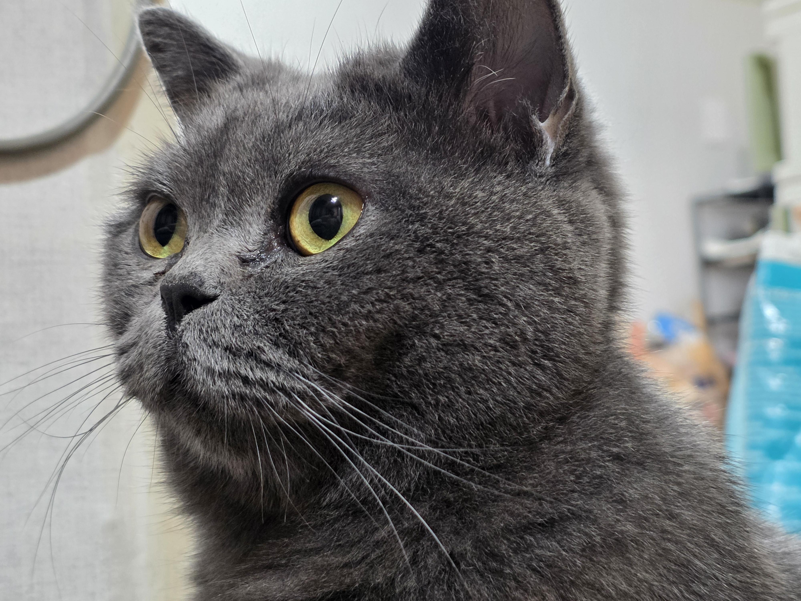
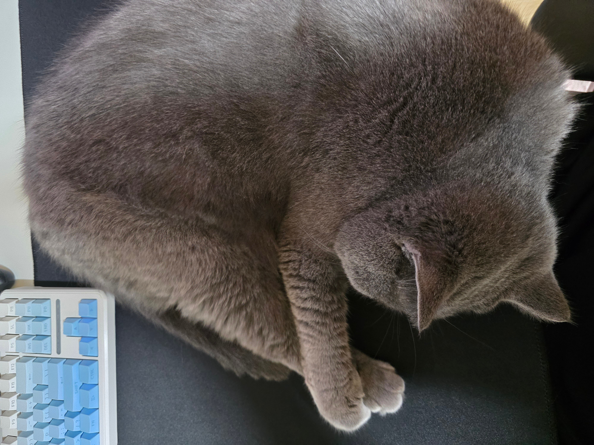
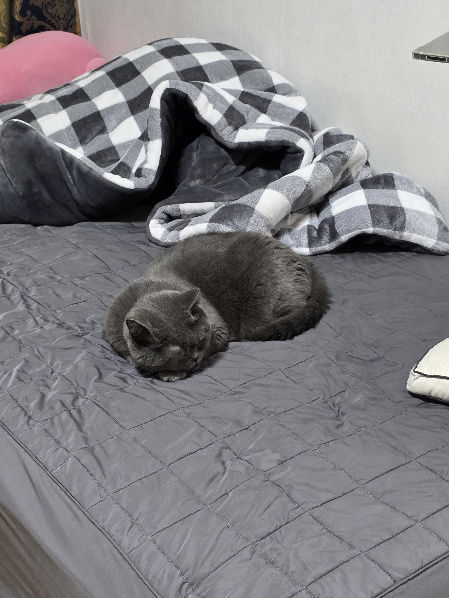
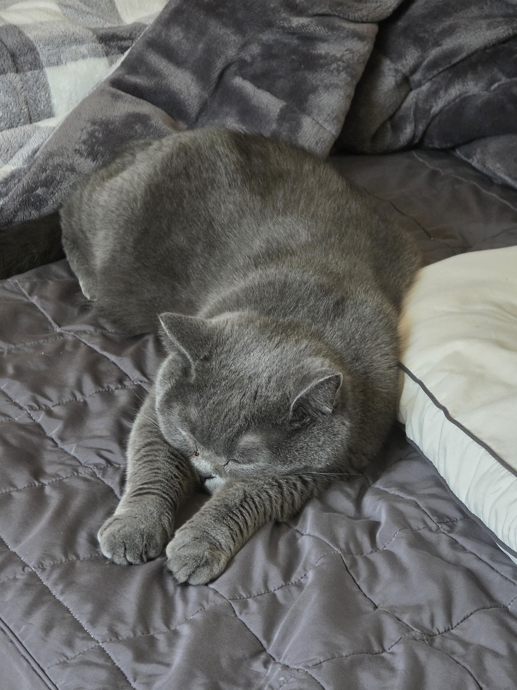
아주 지 세상이시다
개드립 법령에 의해 10장 이상 가져옴











아주 지 세상이시다
개드립 법령에 의해 10장 이상 가져옴
그냥 자는데?
하루에 한두번 돌돌이 함
내가 입는 옷은 세탁하고 바로 격리 시켜서 옷엔 안묻어나옴
그럼 그냥 자는게 아니잖아
어차피 돌돌이 해도 다시 올라가서 털 뭉치 속에서 자는건 똑같아
적어도 먹진 않으려고 베개쪽만 관리함
돌돌이보다 털갈이 장갑이 더 낫더라
좆냥이 배 만져도 됨?
털에 윤기가있는게 잘 먹이는것같다
다 되는데 이쉐끼 배 만지는거랑 발바닥 만지는거 되게 싫어함
하지만 어쩌지? 내가 주인인걸 바로 배방구
냥냥이 주인이라면 물려도 배때기는 포기못하지 부디 무병장수해서 주인 애먹이지만 않음 좋겠따
개추개추
전기장판 온도 한 칸 올릴 때마다 고양이 길이도 한 뼘씩 늘어나는 듯
역시 고양이는 온도가 높을수록 녹는게 맞다
봄이 기여워 ㅠㅠ
기봉이거든?
나한테는 봄이야 봄이가 더 잘어울려
하지만 내가 주인이죠? 깔깔
응 우리 봄이 잘좀 키워줘
개추나 눌러

고양이가 갑자기 아파서 가지만않앗어도 나도 봣을텐데
ㅠㅠ
괜히 그냥 한대 때리고 싶다 ㅋㅋ
덜녹앗는데? 더녹여서가져오도록
우리애는 이제 3년 다 되어가는데, 하루에 밥 50g 주고 간식 안주니까 살은 안찌던데
나중에 더 크면 찌려나
고양이중에 러시안블루가 제일 귀여워
러블 아니야!
녹다못해 탄거 아니냐
고양이털 생각보다 따갑더라 장판에 털붙은거 위로 누웠는대 따꼼함
두손 다소곳하게 모은거 봐..!
고양이들 털도 풍성한데 따뜻한 거 진짜 오지게 좋아하는 거 같음 ㅋㅋㅋ
고양이 평균 체온이 38~39도라 따뜻한거 좋아함ㅋㅋ
빨리 볼뽀뽀
준법 시민. 합격
개귀엽네 ㅋㅋㅋ
근데 고양이 털 이불같은데에 엄청 떨어질텐데 어케 관리함?